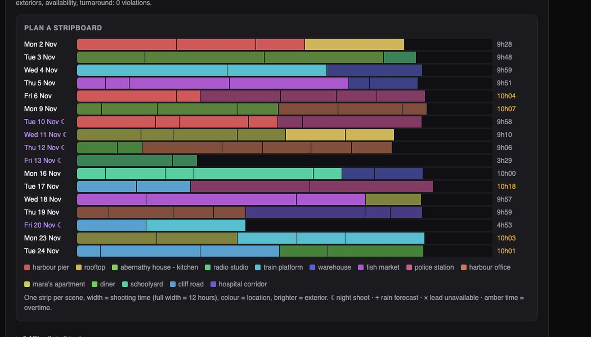
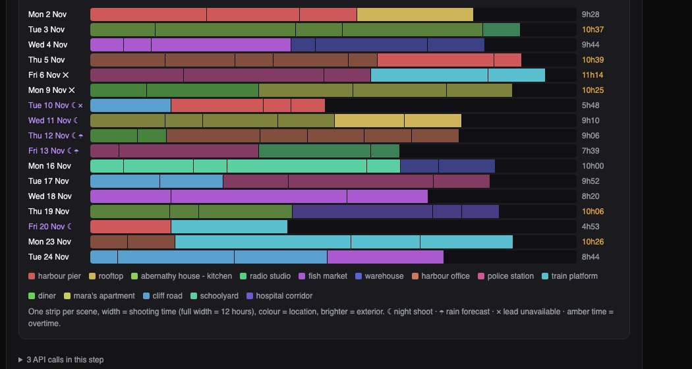

Python · Constraint solving · Film production · 2026-10
The Lead Is Out for Three Days. Now What?
A film scheduling system: it reads an 85-scene screenplay, works out who has to be on set for each scene, and solves for a 17-day shoot that costs 19% less than filming in story order. When the lead actor drops out for three days and rain is forecast, it re-plans in 12 seconds, moving 35 scenes instead of all 85.

Built from a written blueprint as one vertical slice. The screenplay is generated (nonsense dialogue in correct standard format), which gives the parser an answer key. All day rates, location fees and working rules are my assumptions, not any real union agreement. Schedules are the best the solver found in 12 seconds, not proven cheapest. No language model is used. Not built: PDF import, props and stunts breakdown, real weather feeds, Kafka, Terraform, single sign-on.
01 — The problem
Films are not shot in story order. All the scenes in one location are shot together, actors are paid from their first day to their last so their scenes should be close together, night shoots cannot be followed by a morning call, and exterior scenes need daylight and dry weather. An assistant director balances all of this by hand on a stripboard, and then an actor gets sick. Can software build that schedule, and rebuild it after a disruption without tearing up everyone's plans?
Blueprint 9 of ten in a second build book, built as its demo scenario end to end.
02 — What I built
A Python service on PostgreSQL with a background worker and a web page, started by one docker compose up.
- Screenplay parser: scenes, locations, page counts and who is physically on set.
- An approval step: a person signs off the breakdown before anything is scheduled.
- A scheduler that assigns every scene to a shoot day under the working rules, at the lowest cost it can find.
- What-if plans that stay close to the plan they are based on.
- Budget comparison and call sheets with sunrise, sunset and rain risk.
03 — How it was built
- 01
Who is actually on set?
A screenplay names a character before each line they speak. But a character heard in voice-over is not on set, and a character who is there but silent has no line at all. The parser calls a performer if they have a line that is not voice-over, or if their name appears in the stage directions. Two traps cost me accuracy at first: "Young Mara" also matched "Mara", and the heading "MARA'S APARTMENT" called Mara to every scene set there.
for n in order: # longest names first, so "YOUNG MARA" is not also read as "MARA" low, hits = re.subn(rf"(?<![A-Z]){re.escape(n)}(?![A-Z])", " ", low) - 02
Turn the rules into a solver's language
Each scene gets one yes-or-no choice per shoot day, 2,040 choices in all. The rules become constraints: at most 12 hours a day, at most two locations, a day is all-day or all-night, no morning call the day after a night shoot, exterior scenes inside daylight, nobody on a day they are unavailable. The cost to minimise adds up crew days, location days, moves, overtime and each actor's span from first day to last.
m.Add(night[d] + used[d + 1] - night[d + 1] <= 1) # no day call the morning after a night shoot - 03
Never trust the solver's word
A second piece of code, written separately, re-checks every rule on the schedule the solver returns. A schedule that fails is never saved. Tests run that checker on the saved schedules too. The solver has not been wrong yet, but a bug in how I wrote a constraint would look exactly like a valid answer.
broken = engine.violations(scenes, plan, dates, un) if broken: raise RuntimeError("; ".join(broken[:3])) - 04
Re-plan without wrecking the plan
When the lead loses three days, solving from scratch gives a schedule that is about as cheap but moves nearly all 85 scenes. Every move means a location rebooked and a crew told. So the re-plan pays a penalty inside the solve for each scene that leaves its day. In the demo 12 scenes had to move and 35 moved in total; from scratch it would have been about 80.
if previous.get(s["number"]) is not None and previous[s["number"]] != d: terms.append(STAY_PUT * x[s["number"], d]) - 05
Say no early, with the reason
A third what-if makes the lead unavailable for the whole shoot. Instead of letting the solver run and report "infeasible" with no explanation, a quick check finds the cause first and says it in words. The earlier plans are untouched, because every what-if owns its own schedule.
out.append(f"{a} has scenes but is unavailable on every shoot day")
04 — Results
Plan A: 17 shoot days, $1.33M. Filming in story order: 19 days, $1.64M. The plan is $26k over the $1.30M budget, and the system says so.

Plan B (lead out for three days, rain on two):
| Plan A | Plan B | |
|---|---|---|
| Shoot days | 17 | 17 |
| Total cost | $1.33M | $1.37M |
| Overtime | $6k | $35k |
| Exteriors on rain days | – | 0 |
35 scenes moved; 12 of them had no choice.
On four other generated screenplays: the parser got the cast of all 340 scenes right (a simpler reader got 204), and schedules cost 26% to 30% less than story order.
An honest limit. None of these schedules is proven to be the cheapest. After 12 seconds the solver can only prove the true minimum is above about half the cost it found. "Much cheaper than story order" is what the evidence supports.
Checks. 34 tests, including: every working rule re-checked on the saved schedules, scheduling refused until the breakdown is approved, crew unable to see pay rates, and one studio unable to see another's production.
05 — What I'd do next
- Real working rules (meal breaks, turnaround hours, minors' hours), set with a working assistant director.
- A real screenplay import, and a breakdown of props, vehicles and stunts.
- Longer solver runs to see how much cheaper the schedules can get.